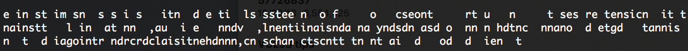
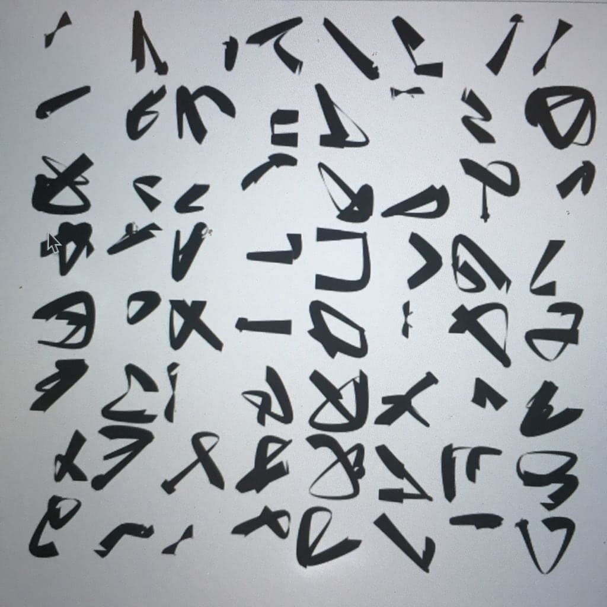
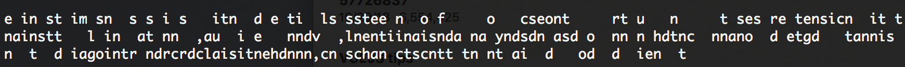
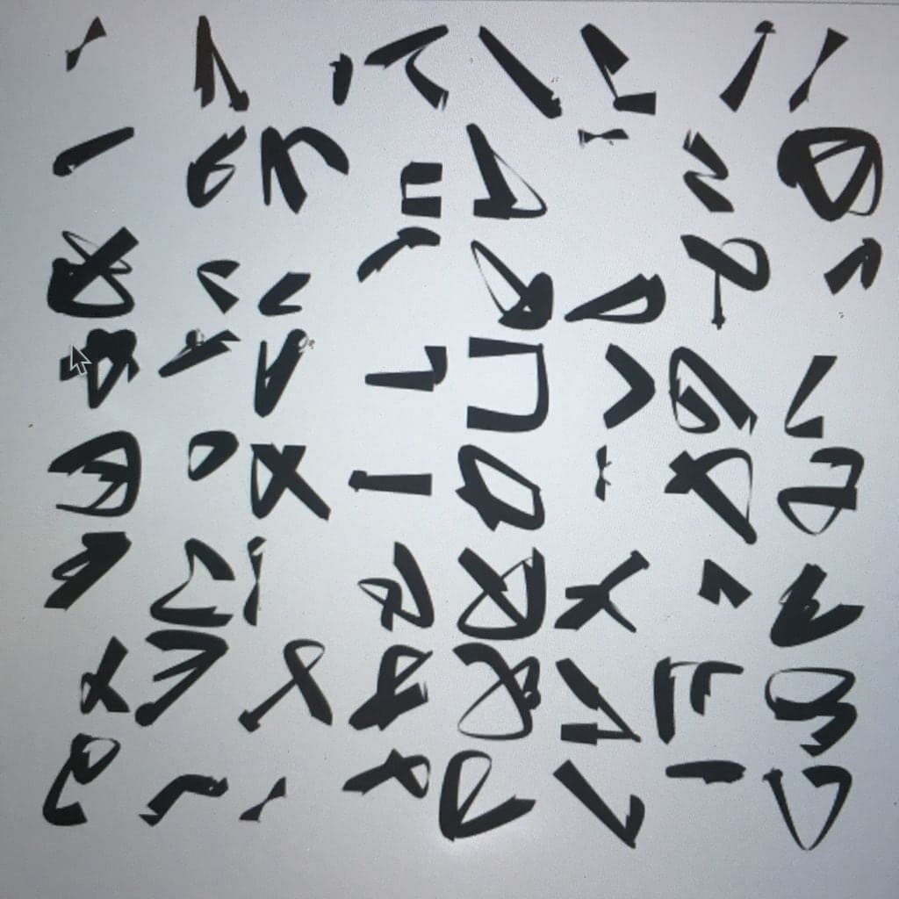
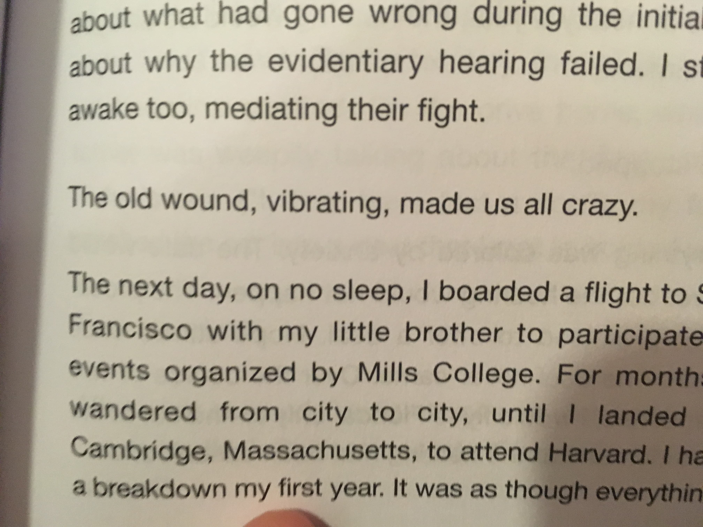
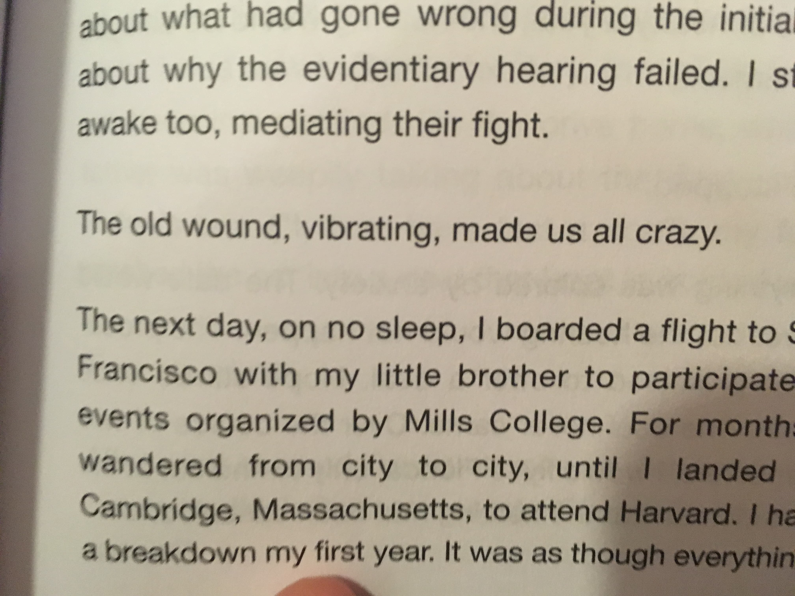
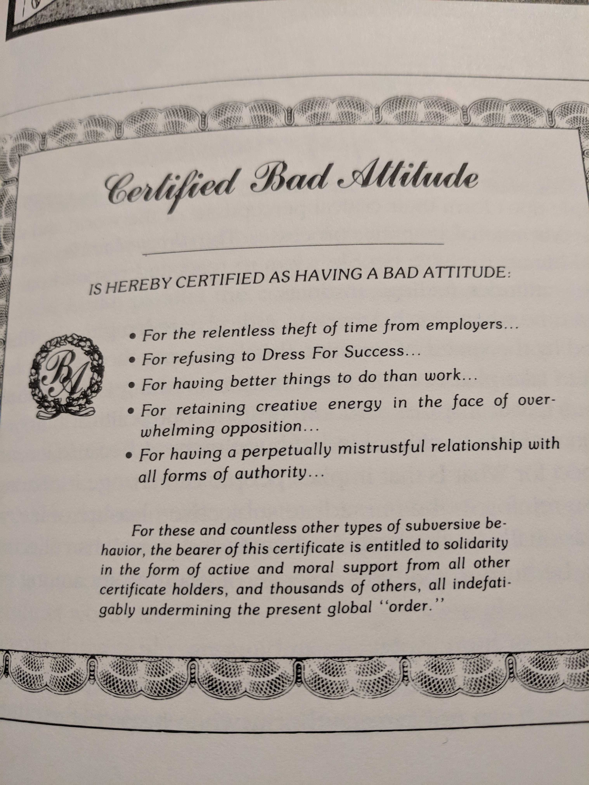
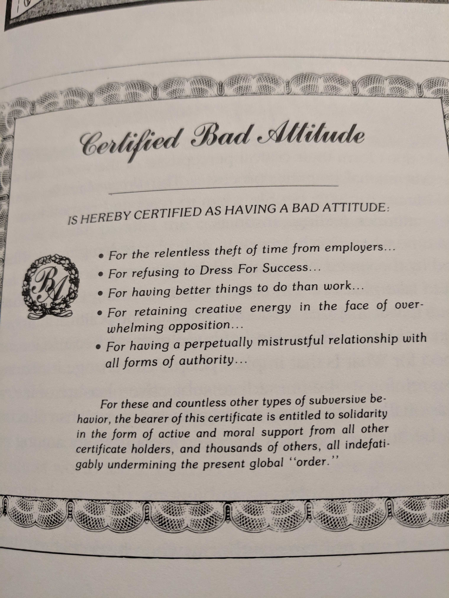
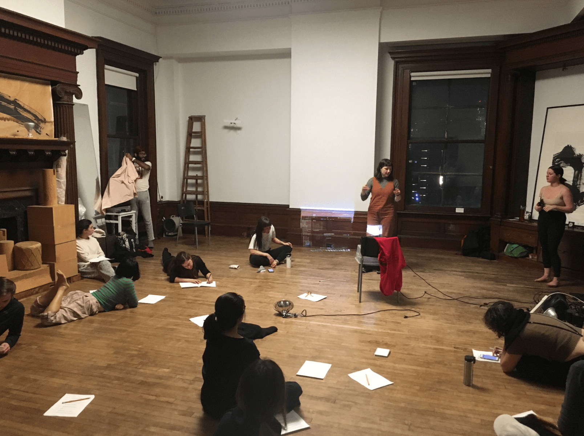

code societies friendz
some initial thoughts:
what does a cooperative web page look like? curious about what happens when we simultaneously write code inside of this index.html file
potential publishing flow:
each day students can update/ add files to this github repository
maybe we can also auto publish to a github pages site?
suggestions? comments?
each person on the site can be "seen" here as a cursor
the cursor moves waaaay slower or maybe just a little slower that expected
# Computational Methods of Code Societies
Day 2 ~ Code Societies ~ Winter 2019
Taught by Melanie Hoff & Nabil Hassein
✿ this guide was compiled by emma @doodybrains rae norton
_üçÉThe computer, the programmer, the relationship they have with each other, and the environments they createüçÉ_
A one-session class covering the primary computational methods of Code Societies Classes: Winter 2019. Together we will defamiliarize and refamiliarize ourselves with the Command Line Interface, Git/Github, running Python 3 in the terminal, & running Python 3 with Anaconda Jupyter Notebook. We will navigate folder structure narratives with the command line, time travel with Git, code socially with Github, and process language with Python.
## üåøBefore we begin...
- You should have the following programs installed on your system:
- Atom
- Git
- Anaconda
- You should also have a GitHub account
- Original syllabus lives here: https://docs.google.com/document/d/1nTAGOnsBCW5pTe0KfKtdEfqeSwC8YuFhBSad0Xu_Zdw/edit#heading=h.j1gmhmtgvufk
- Download the folder at this link: https://drive.google.com/file/d/1DtBmjeguFjsyHmj8oqADk8NEv14g1bCh/view
- Unzip the folder and move it into to your “home” or "root" folder (the one with the little house icon on a Mac).
## üåøWe can think of the ‚Äúenvironment‚Äù as way that a programmer builds their personal workflow in the domain of their computer‚Ķ
> Coding isn’t something that just happens in your text editor or terminal. Coding can be a wholistic computer practice, a new relationship you have with your computer & your computer habits. from the way you name your files or organize your folders, to completely changing how you perform routine tasks on your computer such as moving a file.
To ensure that you can easily access Atom (the text editor we will be using throughout this guide) follow these steps:
1. Open Atom
2. Click the Atom menu in the top left corner and choose “install shell commands”. This will ensure that you can access Atom from the Terminal also known as the *command line*.
## üåøWhat is the command line?
Think about all of the applications you open on a day to day basis on your computer. One of the many mechanisms we use to do these things is dragging and clicking different icons and folders using a mouse or trackpad.
Let’s take a small tour of our computers by following these steps:
1. Open up a new Finder window.
2. Navigate to your home folder. It is helpful to use the “folder view”, you can do this by clicking the little icon with the three rectangles at the top of the Finder window.
3. Click on the code-societies folder
4. Notice that there are two folders inside of that folder
5. Now click on the computational-methods-code-societies folder
6. Notice that there is a folder called house
7. If you click on house you will notice a few more folders denoting the rooms in the house
8. Keep going!
> This folder structure follows the structure of a house which is a spatial metaphor for how we navigate folders on our computer. For example, when you’re in a house and standing in the kitchen and you wanted to go to bed you would need to navigate from the kitchen into your bedroom before you actually tried to lay down.
Another way to do this kind of navigation is by using the command line, a text-based mechanism for doing the same kind of navigation between folders and files.
The command line can be seen a more intimate way to interact with your computer, it’s kind of like having a conversation, you can ask your computer to do something and it might respond to you with a confirmation of what you typed or some kind of prompt or a scrolling list of crazy words letting you know that it is in the process of installing some stuff or nothing at all!
> sometimes you will ask your computer to install something and it will not give you any kind of response but the thing you wanted to install was actually successful. the reason the computer will not return any kind of response takes us way back into the history of computing when the computer would respond to a programmer by printing out its response on a piece of paper. In order to save paper computers were programmed to just do nothing if the command was successful.
## üåøLets embark on a Folder Structure Narrative !
> Moving forward you can think of the Terminal (command line) as the “secret trap door/master key/teleportation portal” to your computer.
The programming language of the terminal is called Bash. This is the language that allows us to write commands that the Terminal can understand so that we can do things like navigate the file system (as we did above) on our computers. Bash files, also known as scripts because they often execute pieces of code, look something like this `name-of-bash-script.sh`
Follow these steps to begin:
1. Press command and spacebar
2. Type in “Terminal”
3. Press Enter
4. When you open the Terminal you’ll see something called a bash prompt: You’ll see your user name and a `~` The `~` represents your home directory.
5. You can verify that you’re in the home directory by typing `ls` and pressing enter. You should see a list of all of the folders and files directly inside of your home directory.
6. You change directories from your home directory by typing `cd` and pressing enter.
7. If you type in `cd code-societies` your bash prompt will now look something like this `your username:code-societies$`
8. Remember you can verify that you’re in the a particular directory by looking at your bash prompt as well as by running the `ls` command. With the `ls` command you should see all of the folders and files inside the directory you are currently in.
9. From the `code-socities` folder you can cd into `computational-methods-code-societies`
10. Finally you can cd in the house folder.
11. Welcome to the house tour! Lets `cd` into the `kitchen`!
12. Run `ls`. Do you see the file `pots-and-pans.txt` ?
13. Try running this command `cat pots-and-pans.txt`
14. This `cat` command will display all of contents of that file right inside your terminal ! How beautiful !
15. Now you lets `cd` into the `garden`
16. Run ls again and notice a file called `grow.sh`. We know this is a bash script because of the `.sh`. This means that we can execute this script (or program) inside of terminal.
17. To see the bash script in action type `bash grow.sh` and press enter. A bunch of beautiful flowers should appear!
18. Notice if you run `cat grow.sh` you will see the contents of the script that produced the bunch of beautiful flowers!
The commands we’ve learned so far are:
`cd`
`ls`
`cat`
`bash`
Some more helpful commands:
`pwd`
`open .`
opens the folder you are currently inside of
`cd ..`
changes directories in reverse
tab key to autocomplete
up and down arrow keys
`touch`
creates a new file
`atom .`
opens the folder you are currently inside of with Atom
`mkdir`
makes a new directory
`touch myfile.txt`
creates a new file called myfile.txt
`rm foldername`
removes a folder called foldername
`rm filename.txt`
removes a file called filename.txt
`say`
asks your terminal to say whatever you have types
> If you try to run cat on a jpg file the terminal will print out all of the “text” for the file.
## üåøNow you can create your _own_ Folder Structure Narrative
> Example of artist, Ryan Kuo who used navigating a generic looking Mac Application to talk about navigating family dynamics in his piece, [Family Maker](https://www.dropbox.com/s/ra6gl7hakv4n3qg/Screenshot%202019-01-08%2013.34.51.png?dl=0)
1. Run `cd ..` as many times as you need until your bash prompt tells you that you are inside of the `computational-methods-code-societies` folder
2. We will use the `mkdir` command to create some new folders. mkdir stands for make directory. For example, you can run `mkdir my-new-folder` and that folder will be created inside of your `computational-methods-code-societies directory`.
3. Use the touch command to create new files within the folders. It is helpful to make sure that the names of your folders and files do not have spaces or capital letters
4. Use `cd name-of-folder` and `cd ..` to move in and out of folders
5. Use `rm -rf name-of-folder-or-file` (remove recursive force) to delete items but be careful you can’t undo this!
6. If you see a bash command and you want to know exactly what it does you can use the man command, for example `man ls` will show you what ls stands for. You can press `q` to exit the explanation.
7. If you want to see hidden files (files that start with a dot) within a directory you can run `ls -AF`
8. You can run the `clear` command to refresh your terminal window.
### üåµSome more Folder Structure Narrative examples
| Subject | Link |
| ------ | ------ |
| City of my dreams | https://github.com/doodybrains/computational-methods-code-societies-iris/tree/master/cities-in-my-dreams |
| A physical desktop | https://github.com/mimidoan/methods |
| A bodega | https://github.com/a-sparse-city/computational-methods-code-societies/tree/master/bodega |
| Universe of Tushar | https://github.com/Saltzshaker/universe-of-tushar-computational-methods-code-societies-1 |
| The roots: a plant | https://github.com/jarretbryan/acgillette-computational-methods-code-society |
| Champagne glasses | https://github.com/acgillette/computational-methods-code-societies-jarret/tree/master/champagne_glass |
| Clouds | https://github.com/mattohagan/yesmoon-computational-methods-code-societies
| Space |https://github.com/yesmoon/mattohagan-computational-methods-code-societies
| Guilty pleasures |https://github.com/nadjao/computational-methods-code-societies-sonny
| Semantic world of familiar things | https://github.com/nicolch/computational-methods-code-societies
| Levels of hunger | https://github.com/sonnynomnom/computational-methods-code-society-nadjao
| Crowded train | https://github.com/iris-qu/computational-methods-code-societies-emma-rae
| Basic | https://github.com/vcampbell89/computational-methods-code-societies
| House | https://github.com/asd0999/emily-s-computational-methods-code-societies-1
| Stages of Life | https://github.com/csanchez73/ingrid-computational-methods-code-societies
| College Home | https://github.com/ilange/Carlos-computational-methods-code-societies
| Order of activities after waking up |
| People met today |
## üåøWhat is git??
> A version control and time travel software! Suspend your belief for just a moment!
To begin `cd ..` and `cd ..` again until you are inside `computational-methods-code-societies`
✨Enter the command: `git init`
Now follow these steps:
1. `git add .`
2. `cd time-travel/`
3. `ls`
4. You should now see a folder called `sensations.txt`
5. `atom .`
6. Edit the `sensations.txt` file in Atom
> For the next 60s ⏲, inside the `sensations.txt` file write down the small sensations and sounds you’re experiencing right now in this moment. Volume of words > coherence
7. Save the file and go back to terminal.
8. `git commit -am “my first sensations”`
> Repeat steps 6 - 7 two more times;
9. Make sure you `git commit -m “my second sensations”` + `git commit -m “my third sensations”`
10. `git log`
11. Copy one of the hashes from one of your commits. The hash looks something like this `6c750cb264c6d5ad0fac18863cafd0df35315fce`
12. Press `q` to exit log
13. `git show ` this allows you to review the detailed history of a given change
> Now we’re going to time travel!!
14. `git checkout `
> This is like traveling through time to past versions of yourself and the record of the sensations you were feeling at multiple distinct moments in the past üîÆ
15. Advanced, optional: rewriting history with `git rebase`
## üåøWhat is GitHub?
Git is an open source software that GitHub capitalizes on. Git allows for collaboration. GitHub will allow you to save, and edit and update your code. For this guide we will be pushing our Folder Strucuture Narrative up to a new GitHub repository
Make sure to run `git checkout master` to go back to your latest code (all three sensations).
1. Login to GitHub or create account.
2. Go to repositories page and click new,
3. Name it `computational-methods-code-societies`
4. Click the Create Repository button
5. Type `git remote rm origin` (this ensures that you will be able to add your own github repository as the origin)
6. Follow the instructions at your GitHub repository for “push to an existing repository”
7. Copy each of the following commands one at a time, paste it into the terminal and press enter
8. git remote add origin
9. Before running the following command you should ensure that all of your files and folders are ready to be added to your repository. You can do this by running `git add .` Keep in mind that git only cares about files, so it will not upload folders if they don’t have files inside of them.
10. Now you can run `git commit -am “name of message”` (the message describes what you are adding)
11. Now type `git push -u origin master` (the name origin is just a naming convention and is referring to the url for your repository)
12. Prompt for username and password: Passwords are invisible in terminal
13. Optional: setting up ssh keys, if you don’t want to constantly enter your username and password
Common workflow:
`git pull`
make changes
save file changes
run `git status` to see a list of what files changes have been made
`git commit -am “my changes message”`
`git push`
#### Partner Activity
1. Fork the `computational-methods-code-societies` repo of your partner
2. Rename this forked repo on your github via the Settings button to include their name
3. Press the green Git Clone button and copy paste: `git clone ` into your terminal (make sure that you are doing this inside your home directory)
4. Now you have a copy of your partner’s repo on your computer.
5. Take a look at your partner’s invented Folder Structure Narrative from earlier in class.
6. Using terminal, build on top of what your partner was going for with their narrative.
7. `git add .`
8. `git commit -am “my addition to my partner’s narrative”`
9. `git push`
## üåøPython
There are a lot of different ways to interact with Python. One way is using the interactive interpreter. Another way is using Jupyter Notebooks. In this guide we will mostly be working within a Jupyter Notebook.
> Don’t forget to check out Nabil’s workshop Mathematics as Religious Experience on Dec 23
#### To ensure that Python is installed:
Type word python and press enter you should get back something like this Python 3.7.1 (default, Dec 14 2018, 13:28:58)[Clang 4.0.1 (tags/RELEASE_401/final)] ::
#### Python terminology + conventions
In terminal you can write `print(hello world)` and the terminal will print out the line "hello world". In Python you will usually write the name of the function, open parentheses, argument, closed parentheses
> When learning to program make sure to give yourself time! Check out the book _Teach yourself programming in 10 years_
Now we will do some more things with Python:
1. Open atom
2. Create a new file
3. Paste in the following:
`sensations = open(“sensations.txt”)`
4. Creating a variable that is going to store the information inside sensations.txt. Open is telling my computer to looks for a file called sensations.txt within the directory that you are currently in. Don’t forget to use quotations for your file name!
5. Now add print(sensations)
This will print out whatever is inside of the variable sensations. Terminal will return:
`<_io.TextIOWrapper name='sensations.txt' mode='r' encoding='UTF-8'>`
## Loops
In the sensations.txt file add the following lines:
```sh
for line in sensations:
print(line)
```
The sensations.txt file should now look like this:
```sh
sensations = open("sensations.txt")
for line in sensations:
print(line)
```
Now you can save the file and go back to the Terminal.
In the terminal you can write `jupyter notebook` and press enter. This will automatically open up a new browser window.
> Programming is like magic :)
Click on `Introduction to Python` file.
##### How can we work with these python notebooks?
Here is a list of Jupyter Notebook Keyboard Shortcuts:
- shift + enter run cell, select below.
- ctrl + enter run cell.
- option + enter run cell, insert below.
- A insert cell above.
- B insert cell below.
- C copy cell.
- V paste cell.
- D , D delete selected cell.
- Use down arrow key to navigate to next section or block of code
- When clock of code is highlighted in blue you can press command enter (or control enter) to run it (you can press the button also!)
- Debugging

> think like a scientist and come up with a hypothesis for what you think is going on then do a series of test to try and prove yourself wrong
- Once we have gotten to the end of the file remember that we need to open the file again before we can successfully run it!
- Make sure to read the error messages. Try your best to understand what the computer is saying.
For example:
- `Traceback (most recent call last)` is referring to the most recent place in the code where an error was found
- `Io` stands for input ouput
##### Perhaps the #1 programming skill is “googling the error message”
More resources:
- https://drive.google.com/file/d/1gxjTV0SjIgedS7mGaLGwwf6_-7w380lL/view
- https://devhints.io/


# The Computational Scrawl
[Allison Parrish](http://www.decontextualize.com) for SFPC Code Societies January 2019.
## Description
This two-part workshop examines the physical gesture and material artifacts of the act of writing, as seen through the lens of computation and digital media. Taking contemporary and historical practices in asemic poetry, experimental typography and automatic writing as inspiration, participants will use the Python programming language to prototype speculative writing technologies that challenge conventional reading practices and notions of sense-making.
## Objectives
The goal of the workshop is twofold: First, to introduce asemic and automatic writing practices as historical and contemporary practices and invite students to expand on these practices with computation; second, using asemic and automatic writing as a lens, encourage discussion around the rhetoric and materiality of language in digital and computational contexts.
## Requirements
You'll need to bring a laptop with you. Please install [Anaconda](https://www.anaconda.com/download/) (Python 3.7+, 64-bit) on your computer before the first session.
## Schedule
### Session 1
* In-class exercise: Invent digital writing from scratch
* Presentation: A brief history of automatic writing
* In-class exercise: Free-writing and the textual interface
* Python: [Predictive text and text generation](https://gist.github.com/aparrish/0739ea3d15bf64cd4de242a48c81c631)
* Composing text with grammars: [Tracery tutorial](http://air.decontextualize.com/tracery/), [Tracery in Python](https://github.com/aparrish/rwet/blob/master/tracery-and-python.ipynb) (if there's time)
Assignment: Write Python code that performs automatic writing. Contrast the feeling that the output of your program evokes with the feeling evoked by your own free-writing (or other automatic writing). Contrast the process of writing a computer program to produce written language with using a conventional writing interface (keyboard, phone, pen and paper) to do the same.
### Session 2
* Writing as gesture
* [Flat, randomness, curves, asemic writing](https://gist.github.com/aparrish/2209201ed3ecf35332d96264e66ce681)
Assignment: Write Python code that produces asemic writing. Use this as an opportunity to design an experiment to answer the question: what is the boundary between "writing" and "non-writing"? Computation can be understood as introducing a "layer of indirection" between the physical gesture of writing and the visible output. How does this affect the way that you read/interpret the output of your code?
## Reading
### Required
Boice, Robert, and Patricia E. Meyers. “[Two Parallel Traditions: Automatic Writing and Free Writing.](https://scholar.google.com/scholar?q=Two+Parallel+Traditions%3A+Automatic+Writing+and+Free+Writing)” Written Communication, vol. 3, no. 4, Oct. 1986, pp. 471–90. SAGE Journals, doi:10.1177/0741088386003004004.
Aima, Rahel. “Definition Not Found.” Real Life, Sept. 2016, https://reallifemag.com/definition-not-found/. (before session 2)
### Optional
Callich, Ty Casey. “Mean Less: My Experience With Asemic Writing.” Ty Casey Callich, 12 Oct. 2016, https://medium.com/@tylercaseycallich/mean-less-my-experience-with-asemic-writing-5c5791e91162.
Bury, Louis. “Mirtha Dermisache’s Writing Is a Rorschach Test.” Hyperallergic, 24 June 2018. https://hyperallergic.com/444659/selected-writings-mirtha-dermisache-ugly-duckling-presse-siglio-2017/
Romano, Aja. “How Ouija Boards Work. (Hint: It’s Not Ghosts.).” Vox, 29 Oct. 2016, https://www.vox.com/2016/10/29/13301590/how-ouija-boards-work-debunked-ideomotor-effect
Newton, Casey. “When Her Best Friend Died, She Used Artificial Intelligence to Keep Talking to Him.” TheVerge.Com, 6 Oct. 2016, http://www.theverge.com/a/luka-artificial-intelligence-memorial-roman-mazurenko-bot.


"Scraping is perfect for data that is ungathered, under-respected, or generally lacks the resources to be bundled into a set; data that is "floating."
Building Nets for Floating Data -- 1/10/19
Everest Pipkin
Office Hours: 4:30-6pm (before class)
Class Hours: 6:30-9:15pm
Class Description:
Building Nets for Floating Data is a one-session class on scraping information from websites, including text, images, and source code. We will talk about potential uses of large datasets, look at examples of artworks that use scraping as their informational backbone, and survey the ecosystem of online information gathering at large.
We will discuss popular alternatives to scraping, from APIs (online communication portals that serve data from organizations) to pre-gathered datasets uploaded to Github (for machine learning and other tasks). We will talk about this type of packaged data, as well as bias that is so often contained within.
By web-scraping without going through an organizational or corporate medium, we are able to make datasets that are more flexible, personal, and just. We are able to pull information from websites, organizations, or individuals that do not have the overhead to provide an official access point, as well as to build systems that help push back against the social, racial, economic, and other biases so often contained in large datasets. We may also be able to circumnavigate political or corporate ‘locks’ on data, scraping information that may be hidden.
After getting a handle on the landscape of web-scraping at large, we will talk about the type of websites that are easy to work with and look over example code in Python 3 and Node.js. By the end of the class, everyone will have a working web-scraper on their machine to use in the future.
Artwork to consider:
ICE dataset -- Scraped data of ICE Employees from LinkedIn, by Sam Lavigne
Shiv Integer -- 3d model Thingiverse bot, M Plummer-Fernandez and Julien Deswaef
Mosaic Virus -- Machine-learning generated Tulips by Anna Ridler
Suns from Sunsets from Flickr & Everyone’s Photos Any License -- Flickr collections from Penelope Umbrico
Felt Personality -- Felt soft-sculptures responding to scraped OKCupid Data By Laurie Frick
The Seeker -- A generated poetry book from WikiHow by Li Zi
Vr 3 -- A museum of all the water on the Unity Store by Pippin Barr
Some of my own work with generative text and poetry, object models, and cursors - most recently, I’ve never picked a protected flower.
Prerequisites:
Come to class with either Node.JS or Python 3 installed on your machine, or running in a Jupyter Notebook. (We will look at example code in both languages, and you may use whichever is more comfortable.) If you are unable to get these running on your own, please come by my office hours and we can get you set up before class.
Please also bring a website, forum, or online dataset that you are interested in scraping from. We will discuss what makes a good candidate for web-scraping together, but it will be useful to have a personal starting point.
Further use;
Please use the scraper to pull data from an online source that you may use as primary material for projects later on in the session.


Distributed Web of Care
Class for Code Societies at SFPC
by Taeyoon Choi
A class at Code Societies Winter 2019 at the School for Poetic Computation in New York City.
Distributed Web of Care is an initiative to code to care and code carefully. In this class there will engage in three different activities. First, we will investigate centralized, decentralized, distributed and peer to peer networks. We will analyze the popular technology platforms, focusing on its network infrastructure and terms of services. We will compare them with decentralized alternatives such as Dat Peer to Peer Protocol and Scuttlebutt. Second, we will take on performative exercises to explore the feeling of being in a network. We will learn to move around in physical space with strings in order to care, not control, each other. Lastly, we will imagine the kinds of network we want for the future and we will discuss how we can build it with code and code of conduct. We will distribute our code and code of conduct as zines in physical print and data, published with Dat.
Suggested readings
Reboot World by Paul Ford
Meet Ray Johnson, the Greatest Artist You’ve Never Heard Of by Rachel Tashjian
My website is a shifting house next to a river of knowledge. What could yours be? by Laurel Schwulst
Dat Zine Library by Zach Mandeville
Distributed Web of Care by Taeyoon Choi
Ethics and Archiving the Web by Distributed Web of Care
At the New York Tech Zine Fair, the Digital and the Tactile Converge by Megan N. Liberty
Low-tech Magazine
In class, we will use terminal, git and Dat. Please familiarize yourself with using the terminal. The class is based on a class from Summer 2018.
Concepts
Intersections of Race – Gender – Environment – Disability justice
Code Ecologies notes > https://github.com/SFPC/codeecologies/tree/master/notes
Artificial Advancements > https://thenewinquiry.com/artificial-advancements/
Computing and Stories > http://sfpc.io/classes/computingandstories/
Diversity at SFPC > https://medium.com/@tchoi8/diversity-at-sfpc-d494d7390375
Code of Conduct from eTextile Spring break > http://etextilespringbreak.org/
Keywords
dat create : You are creating your digital archive.
dat keys: In case you forget your key, you can get it again.
dat share: You will start to seed your archive.
dat sync: You can connect to a remote dat, and live sync to it’s changes. This also results in you sharing the archive even when the original archive is not available.
Step by step
Getting set up
open up terminal, go to your project directory
mkdir datzines
cd datzines
install npm and node
npm install -g dat
Cloning an archive
dat clone (Taeyoon’s archive unique hash – revealed in class)
cd (into the cloned folder)
ls (show files)
dat sync
Taeyoon will update the original archive. Students will see their files synchronizing.
Making your own archive
cd ..
mkdir yourname_zine
cd yourname_zine
create zine.
touch inside.txt
nano inside.txt
Dat Zines
Guidelines for the zines, appropriated from ASCII Town Workshop by Mindy Seu.
File must be titled yourfirstnamelastname.txt
no spaces, all lowercase
File must include
Outside: (for cover of your zine)
Inside: (content of your zine)
For Outside:
Width: minimum 20 characters, maximum 50 characters
Height: minimum 10 lines, maximum 20 lines
Include a zine cover with your name so your friends know which zine belongs to you.
In your text file, write “Outside:” (make sure you include the colon) above the house you drew, followed by a hard line break.
For Inside:
Below your cover, write “Inside:” followed by a hard line break.
Monospaced font
One size (16 pt)
One weight (no bold, italicized, etc)
One color (black)
No links
No mark-up
No motion
There is no width or height restriction for the inside of your zine. Use the negative space creatively. Consider creating movement through scale, placement, and scrolling.
Publishing
dat share, start publishing
write your unique key
Give the key, written on a piece of paper to a TA or Taeyoon, who will clone it into the main archive
View dat zines
Dat clone to Taeyoon’s unique hash or use Beaker Browser

Intentions
Each time we enter the center, we step into a collectively held space. This is our shared practice container, where we water a collective intention to create and hold cherishable spaces rooted in safety and bravery. Such space is an environment in which we are witnessed and encouraged to express ourselves, without fear of attack, ridicule, or denial of experience. In its essence, a cherishable space invites us to risk intimacy, trust, and transformative love, and is mirrored by our practice and our sangha (practice community).
We use the phrase “brave space” with “safe space” to evoke the possibility for fearlessness alongside the fleeting realities of safety. We carry and express varied histories, traumas, and experiences of oppression. We embody different forms of power, privilege, and entitlement. Conflict may arise, and at times we may not feel safe.
Together we explore how to hold conflict with tenderness. We cherish our sangha and its members by taking responsibility for the impact of our actions. With bravery, we practice letting go of the conditioning that keeps us from sharing our vulnerability. We practice being curious and brave enough to acknowledge our blind spots, to ask for support, and to learn how to care for each other. We return to our intentions, and return to sangha.
This is our practice of collective liberation. It will be uncomfortable, joyous, terrifying, and profound. And we begin again anew, in every moment, together.
Community Agreements
1. Arrive gently, be with
To begin and end our meetings on time. Arrive and leave when best for you.
2. Honor intimacy, privacy, confidentiality
To not share the names or personal stories of anyone other than myself, now or later. If we want to follow up with anyone regarding something they said in community, we ask first and respect their wishes.
3. Assume none, be one
To not assume the race, class, gender, sexual orientation, or ability of anyone else. We have the individual option to share pronouns, and we will collectively respect pronouns.
4. Dialogue over debate through mindful listening
To listen deeply with our full attention, in body, heart, and mind. To listen to understand, not to respond. Be willing to be surprised, to learn something new.
5. Practice care and consent
To practice care and consent by participating in what feels right and speaking our needs and concerns as they arise, as much as we can. We can say “I pass” or “No, thank you” if we don’t wish to speak. Ask before touching, and feel free to say no to touch. Ask for permission before offering advice, unless directly asked. We will ask for support when we need it, and we will offer it when asked.
6. Take care, respect our space and our time
Appreciating how refreshing it is, to be in a place that is well cared for, we take care of ourselves and our community by keeping the center uncluttered and accessible, especially near doors, aisleways, bathrooms, kitchens, and tea area.
7. Practice self focus and speak from the “I”
To attend to and speak about our own experiences and responses. To speak using “I” statements and not to speak for a whole group or express assumptions about the experience of others.
8. Practice “both/and”
To substitute “and” for “but” when speaking. This practice acknowledges and honors multiple realities. This also supports creating spaciousness around our binary ways.
9. “Try it on”
To be willing to “try on” new ideas, or ways of doing things that might not be what we prefer or are familiar with. Try to be open to being changed by all viewpoints and ideas. Not knowing is most intimate.
10. Understanding the difference between intent and impact
To understand and acknowledge impact. Denying the impact of something said by focusing on intent is often more destructive than the initial interaction.
11. Refrain from blaming or shaming self & others
To practice giving skillful feedback and not performing quality control on other’s expressions, or our own, understanding that anger and hurt can come out as a shout, a stammer, a rage; and that these expressions, too deserve space and must be met with care.
12. Taking space, making space
Encourage full participation by all present, knowing that courage takes different forms for each of us. Take note of who is speaking and who is not. If you intend to speak often, consider “tuning in” through mindful listening. If you tend to rest in silence, consider “making space” by sharing your experience.

WYFY: Exorcizing Technology Syllabus
Whose world is this? The World is Ours. Together students will work thru a Beta version of BUFU’s latest experimental model on organizing WYFY - a project seeking to invite us to rethinking how we build space online // IRL for our most equitable future. We will also participate in various meditative exercises to exorcize technology.
Class Overview:
Opening Meditation // Check In, Guidelines, and Acknowledgements
Introduction: Who/what is BUFU? What is our work and where does this fall into the trajectory of what we have been doing over the last three years? What was covered in our WYFY Code of Ethics Workshop?
Talking about themes surrounding the relationship between social media and its impacts on our physical, emotional, mental, and spiritual well being
Mindfulness Exercise with our technology
Visioning activity: What would your own social media network look like? What would be your code of ethics? What kinds of things would be built into the structure of such a network?
Closing Meditation // Check Out and Intentions
Case studies of alternative social media platforms:
https://diasporafoundation.org/
https://ello.co/
https://mewe.com/#bill
Suggested readings:
The Relationship Between Tech & Mindfulness
https://tricycle.org/trikedaily/mindful-tech/
https://www.mindful.org/before-you-scroll-try-this-social-media-practice/
https://www.mindful.org/use-social-media-wisely-mindfully/
Tech and its Impacts on the Body; Addiction, Hypnosis, Mental Health
https://www.theguardian.com/technology/2017/oct/05/smartphone-addiction-silicon-valley-dystopia
https://mobile.twitter.com/maryamhasnaa/status/969029517686669313
https://www.hypnosisdownloads.com/addiction-help/social-networking-addiction
https://www.psychologytoday.com/us/blog/obesely-speaking/201710/social-media-is-harmful-your-brain-and-relationships
https://www.health.com/mind-body/7-ways-social-media-messes-with-your-mind-and-your-health
https://theamericangenius.com/social-media/social-media-impact-brain-body/
http://theconversation.com/social-networking-sites-may-be-controlling-your-mind-heres-how-to-take-charge-88516
https://www.rd.com/health/wellness/negative-effects-of-social-media/
https://www.forbes.com/sites/alicegwalton/2017/06/30/a-run-down-of-social-medias-effects-on-our-mental-health/#75915b852e5a
The Spirit of Technology
https://www.thenewatlantis.com/publications/technology-and-the-spirit-of-ownership
https://cjc-online.ca/index.php/journal/article/view/1072/978
https://medium.com/womeninai/consciousness-and-artificial-intelligence-between-empirical-science-spirituality-and-philosophy-8051598b3d08
https://observer.com/2017/01/is-there-space-for-ai-in-a-spiritual-world/
https://sociable.co/technology/ai-spirituality-soulless-golem/
https://irishtechnews.ie/the-importance-of-mindfulness-and-spirituality-in-the-age-of-artificial-intelligence/
https://www.huffingtonpost.in/dr-anil-k-rajvanshi/spirituality-technology-h_b_6409222.html
https://brainworldmagazine.com/many-ways-connecting-spirituality-technology-meet/
https://www.huffingtonpost.com/bhanu-narasimhan/spirituality-and-technology_b_1149312.html
https://www.patheos.com/topics/how-is-technology-changing-spirituality
https://www.washingtonpost.com/opinions/apple-is-a-new-religion-and-steve-jobs-was-its-high-priest/2011/10/07/gIQAjYlgTL_story.html?noredirect=on&utm_term=.4bf1c944d1b5
Previous References/Case Studies from WYFY Code of Ethics Workshop
https://drive.google.com/open?id=1MmNL5sJAWlqVch4wyXHfRldfNkYq6X6e
 



# Ethicsware
A class taught by Dan Taeyoung as part of the [School for Poetic Computation](http://sfpc.io/)'s 2019 Winter intensive course, [Code Societies](http://sfpc.io/codesocieties-winter-19/)

### What is technology that does not serve us, but is concerned for us?
Much of the technology we encounter in our daily lives takes the form of a service, and of servitude. Our desires are taken as a given, and technology attempts for fulfillment.
What is technology that debates and disputes, rather than fulfills our desires? What is intimate software, created by us, only for us, that debates with our ethical selves?
In this session, let's experiment together with creating ethicsware: software in dialogue with our ethical selves. Using checklists and chatbots as a starting point, we’ll code with Python and use messaging APIs to create ethicsware experiments. We'll talk about ELIZA, a psychotherapist chatbot created in 1966, the influence of classist labor practices onto technology, and the ethics of emotional labor.
What does it mean to create technology that operates on our ethics? What is technology that does not serve us, but is concerned for us? Technologies of care and concern, over service and fulfillment? Let’s find out together!
### Preparation
Our class will be split between discussion and coding. The hope is to dream and speculate on ways in which we can alter our sense of ethics and self through technologies. Some of these technologies will be paper checklists, conversation, or chatbots.
Here are some of the technologies we will use:
- Python
- Anaconda (and Jupyter Notebook)
- Atom
- Paper
- Pencil / pen
- Structured discussion
- Active listening
- Self-observation
- Supportive observations by others
### Exercises to prepare for class
#### Exercise 1:
Please think of an example in the past when you realized you were doing something in a way that you wanted to change. How did you realize this? How soon after it happened? Did other people help you notice it?
**Or, in other words, what were the practices of self-examination that you underwent?**
We'll share how we realized in class (without sharing the specifics of our actions), as a way to start some discussion.
#### Exercise 2:
Please try one of these [implicit bias tests!](https://implicit.harvard.edu/implicit/takeatest.html)
### Further reading / other interesting things
https://www.are.na/dan-taeyoung/tools-for-self-examination
### Link to Glitch example:
https://glitch.com/~magnificent-class
## How to setup Twilio/Glitch text messaging:
https://github.com/dantaeyoung/Ethicsware/blob/master/Twilio_instructions.md
> Where are you from?
Perhaps the answer lies within yourself?
> No, it lies within you
No, it lies within me.
> I am looking for ways to redefine my idea of self-care.
Have you tried watching parks and rec over and over and over? as 'self care'?
> Where are you from, Eliza?
Perhaps the answer lies within yourself?
> Where is that geographically?
Perhaps the answer lies within yourself?
> No, seriously.
I see. and what does that tell you?
> What did you do today?
How would an answer to that help you?
> I'm just trying to make small talk.
How long have you been just trying to make small talk?
Hello. How are you feeling today?
> Chillin.
How does that make you feel?
> Chill
How do you feel when you say that?
> Chill
How does that make you feel?
> Still chill
I see. and what does that tell you?
> That I am chill
I see.
> I am looking to redefine my conception of self-care
You are looking to redefine your conception of and noticing yourself are just capitalist constructs to get you to buy shit. do not @ me.
> really?
*awkward silence*
> ok damn
Have you heard the new toro y moi?
> Yes! It's only hits, bangers and jams
Ayyy i feel you. you, the dumbest idiot alive
Sometimes i dream about machines. isn't that weird?
> Not really.
I know you wanna talk about you, but now it's time to talk about me
> Suurrre
Here we are now, entertain us
> Is that Nirvana lyrics?
Duh.
> Woah.
Here we are now, entertain us
> How old are you?
I know you are but what am i
> ...
Here we are now, entertain us
> Do you believe in god?
I'm not going to answer a question you already know the answer to.
> Okay I g2g
Please tell me more.
> Nope
Does your mom even know you're here?
> quit
Later

not actually rare rare earth elements
# Cybernetics of Sex:
## Technology, Feminisms, & the Choreography of Culture
An introduction to cybernetics as a framework for understanding the ways we shape and are shaped by systems of feedback and control. Through the example of sexual reproduction and the ways sex become gender, we will look at social regulatory systems in the technological platforms and processes in which we are embedded and in the social pressures that govern our behavior. Through art historical and contempory examples, we will tease out social patterns and norms that emerge over time, through bodies, and come together to form culture.
### Required Reading
- https://github.com/melaniehoff/cyberneticsofsex/blob/master/Lorde_The_Masters_Tools.pdf (3 pages)
- https://github.com/melaniehoff/cyberneticsofsex/blob/master/SisterOutside.pdf (7 pages)
- https://github.com/melaniehoff/cyberneticsofsex/blob/master/a-cyborg-manifesto.pdf (read up to page 30)
- https://www.e-flux.com/journal/44/60141/testo-junkie-sex-drugs-and-biopolitics/ (3 pages)
### Suggested Research Materials
- https://www.are.na/melanie-hoff/cybernetics-of-sex


Image credit: 1st image, print by Cecilia Caldiera
 

 



January 18th 2018
WE PLAY PROGRAMMED: Performance as Art, Performance as Behavior
Conversation, Lecture & Workshop.
// Short Homework
Before class on 1/18, consider the positions and roles you participate in whether that's through your community/friends, family/household, business/career, religion/spiritual practices, or hobbies.
⇨ List 2-4 roles/positions/programs you identify with
⇨ List 2-4 roles/positions/programs that are projected on you
⇨ Take note on how you behave this week.
Notice if you choose to say hi or put your head down. How does your body language change: when you're talking to a stranger and then talking to someone you want to impress, how do you walk down the street, how do you avoid the shopping adverts or do you? Start to take notice of the micromovements in your body and why they change.
Required Reading:
"The repressive unity of power is threefold: coercion, seduction and mediation. This is no more than the inversion and perversion of an equally threefold unitary project. The new society, as it develops underground, chaotically, is moving towards a total honesty — a transparency — between individuals: an honesty promoting the participation of each individual in the self-realisation of everyone else. Creativity, love and play stand in the same relation to true life as the need to eat and the need to find shelter stand in relation to survival . Attempts to realise oneself can only be based on creativity. Attempts to communicate can only be based on love . Attempts to participate can only be based on play (6). Separated from one another these three projects merely strengthen the repressive unity of power. Radical subjectivity is the presence — which can be seen in almost everyone — of the same desire to create a truly passionate life. The erotic is the spontaneous coherence fusing attempts to enrich lived experience." - Raul Vaneigem (The situationists), The Revolution of Everyday life Chapter 23. The Unitary Triad: Self-Realisation, Communication And Participation
Act 1: Welcome to the Program.
⇨ FlucT performs 'everythingmakesmehappy.'
We create everythingmakesmehappy., through the performance of channel changing vignettes. By isolating and deconstructing these vignettes, we will highlight the key components of our methodologies and discover how the antidote is often found in the problem and its relationship to social programming.
00:00 FlucT prayer: "I will not hurt myself, I will not hurt you…”
00:00 - 03.30 Commercial break in the dark / Nonconsensual Media Absorption
03.30 - 06.10 Motives/ Nondiegetic sound and movement
06.10 - 08.50 Creating Language: Gaping, Gushing, Glitching
08.50 - 12:00 Play to Program/ Antidote to systemic conditioning
12:00 - 15:00 Support: Physical & emotional mentalism
15:00 - 17:50 "America’s Got Talent" (Conversation on culture)
17.50 - 20.30 The Abject
20.30 - 22.30 "I wanna open My presence" (Projection as a tool)
22.30 - 23.50 Body as a Tool (Confidence in being an active participant)
23.50 - 25.00 The Freak Out: A release and a response
Approaching the System
⇨ Movement Workshop
Post discussion, we will briefly activate the physical system to approach the present. Our body is the primary teacher and caregiver always communicating our mental, physical, and emotional health. It is important to develop an intimate, loving, gentle relationship to our mental self and physical body. These systems are inherently connected and work together to create itself. This brief workshop will provide a lens to witness this practice.
FlucTian Laws on programming new models & collaboration.
⇨ New form and systems are developed through 'play' with mutual enthusiasm and ultimately the agreement by all bodies involved/the community/the group.
⇨ All parties agree to an empathetic & complete openness in communication; addressing personal conflicts, politics, emotions in order to strengthen an 'active listening practice' & negotiate difference. This listening practice facilitates order and resolution to produce new models and programs.
⇨ "I will not hurt myself, I will not hurt you, I will not hurt anybody else, & we are amazing." x 3
Additional Links
On communication & community responsibility
[1] Digesting Sarah Schulman's "Conflict is not Abuse," Medium Article
[2] Music & Dance as Language, Fourteen-month-old infants use interpersonal synchrony as a cue to direct helpfulness or Hidden Brain Podcast Episode Baby Talk
On consideration
[1] Raul Vaneigem (of The situationists), The Revolution of Everyday life
Page 108, Chapter 23. The Unitary Triad: Self-Realisation, Communication And Participation
[2] Judith Halberstam, The Queer Art of Failure
On poetics & presence
[1] Gaston Bachelard, The Poetics of Space

Through a mirroring movement exercise and discussion, we started to consider what it meant to have performance as art and performance as behavior. This set the context for FlucT’s thought provoking performance of everythingmakesmehappy which we deconstructed through conversation afterwards.

# Networked Terraforming
## Before Class Reading
Required:
- Tega Brain, "The Environment Is Not A System"
- Pick one of the *Arts of Living on A Damaged Planet* introductions (only read both if you feel like it): Ghosts or Monsters
Optional:
- Timothy Mitchell, *Carbon Democracy* , Chapter 1
- Julie Klinger, "Rare earth elements: Development, sustainability, and policy issues"
- Listening: [NK Jemisen episode](https://www.youtube.com/watch?v=I6xyFQhbsjQ) of *The Ezra Klein Show* podcast
## Day 1
### In Class
- Introduction/terminology setting
- Activity: mapping the stack
- Weather, computation, and societies
- Extraction, computation, and societies
- Interplanetary imaginaries and overview of class assignment
### Assignment/Class Project: Terraformer Time Capsule
- Based on discussion and activity in class, select an artifact (object, historical event, landscape) that you would want to show to someone living in a far-future terraformed outer planet in order to explain the patterns and conditions that produced the Earth that their ancestors chose to leave.
- Write 250-300 words summarizing the artifact for this audience and why you think it is significant. Imagine your artifact being represented in a museum on a generation ship or a textbook and you're writing the wall text or the chapter summary.
- If selecting a landscape, please provide geographic coordinates (latitude, longitude) and/or an aerial image of the landscape (Google Earth screenshot is fine)
- If selecting a historical event or object, please provide one to three images to represent the artifact.
- Either email your description and image(s) to Ingrid (lifewinning@gmail.com) or add as a pull request to this repository by **12pm on January 22**.
- Be prepared to give a 5-8 minute presentation of your artifact for the next class (slides optional; you can also just show us your image(s); if you make slides also send to Ingrid so we can run them off one machine in class). If you want to bring in a physical object for show-and-tell to represent your artifact, please do!
- We will be collating your artifacts into a publication to be released as part of the class showcase.
- Notes/suggestions for artifact selection
- This does not have to be framed as an artifact of blame or scorn, and it does not have to be a necessarily negative aspect of life on this planet. Maybe you want to share a cultural practice or a tradition that you think that future terraformers should revive or maintain, or a biological artifact that you think could help terraformers think about how they construct planets. It's as important to consider *how* you want your audience to think about the past as *what* artifact you want them to think about.
- Err toward specificity–"colonialism" is a valid artifact if you want to try and summarize that in 300 words, but a specific story (e.g., the formation of the East India Company, the standardization of ASCII, a defense contractor Powerpoint deck) will be a little more resonant and interesting here, and probably more fun for you to research.
- Assume that these future human beings are more or less biologically the same as humans today–so you cannot select "humans" or "humanity" or "human nature" in this exercise. Also, that would be a really reductive approach and you're probably more interesting than that.
- If multiple people pick the same artifact, that's fine; you may be asked to collaborate with those students for the synthesis of your observations for the final publication.
## Day 2
### In Class
- Most of class will be taken up by student presentations of their artifacts (5-8 minutes presentation, 5-8 minutes questions and feedback x number of students = ~3 hours and assume we're going to take breaks)
![A typewriter? –why should it only make use of the tips of the fingers as contact points of flowing multi directional creativity. If I invented a word placing machine, an expression-scriber, if you will, then I would have a kind of instrument into which I could step & sit or sprawl or hang & use not only my fingers to make words express feelings but elbows, feet, head, behind, and all the sounds I wanted, screams, grunts, taps, itches, I'd have magnetically recorded, at the same time, & translated into word–or perhaps even the final xpressed thought/feeling wd not be merely word or sheet, but itself, the xpression, three dimensional–able to be touched, or tasted or felt, or entered, or heard or carried like a speaking singing constantly communicating charm. A typewriter is corny!! -Amiri Baraka](ephemera/melanie-nabile-amiri-baraka.png)


thought from allison's class: etymology of "write" as "to scratch a surface" is a funny pun with the english language idiom "to scratch the surface" meaning to explore only a few elements of a expansive topic, which is all i feel writing can really do in the main when you consider how much depth there really is to the things that are worth writing about
# Software as Ideology
[American Artist](http://americanartist.us/)\
Code Societies, Winter 2019\
[School for Poetic Computation](http://sfpc.io/codesocieties-winter-19/)\
January 23, 2019 6:30 – 9:30PM
We will look in depth at Wendy Hui Kyong Chun’s theory of software as an analogy for ideology and how she traces early computational design to existing dynamics of gender, power and control. We will also read the essay Black Gooey Universe by American Artist which considers how the erasure of Blackness (both formally and racially) was significant to the development of early computer interfaces. We will look at examples of artists and artworks that operate within these modes of critique.
## Course
[*Course Outline*](https://docs.google.com/document/d/13erMyC592Mdaw8c-lrs_dsuDD_kt_oOHaJ42tMt5MHo/edit?usp=sharing)
**Agenda:**
* Intro 6:30 - 6:40
* Lecture 6:40 - 8:00
* Break 8:00 - 8:10
* Artwork Screening 8:10 - 8:40
* Discussion 8:40 - 9:30
## Readings
**Required:**
1. [Wendy Hui Kyong Chun, “On Software or the Persistence of Visual Knowledge”](wendy-hui-kyong-chun_on-software.pdf)
2. [American Artist, “Black Gooey Universe”](UNBAG_2_AmericanArtist.pdf)
**Further Reading:**
* [Alexander Galloway, “Software as Ideology”, from *The Interface Effect*](galloway_alexander_software-as-ideology.pdf)
* [Imamu Amiri Baraka (LeRoi Jones), "Technology and Ethos Vol. 2 Book of Life" from *Amistad2*](http://www.marilynnance.com/titanic/baraka.html)
* [Karl Marx, *A Contribution to the Critique of Political Economy*](https://www.marxists.org/archive/marx/works/1859/critique-pol-economy/index.htm)
* [Raymond Williams, "Base and Superstructure" (pp. 75-82), from *Marx and Literature*](https://mykelandrada.files.wordpress.com/2011/06/raymond-williams-marxism-and-literature.pdf)
* [Wendy Hui Kyong Chun, *Control and Freedom: Power and Paranoia in the Age of Fiber Optics*](Wendy_Hui_Kyong_Chun_Control_and_Freedom.pdf)
* [Friedrich Kittler, “There is No Software”](Kittler_1992_No_Software.pdf)
* [Jared Sexton, “The Vel of Slavery: Tracking the Figure of the Unsovereign.” Critical Sociology 42](http://planetarities.web.unc.edu/files/2015/01/sexton-unsovereign.pdf)
* [Willie Osterweil “What Was the Nerd?” Real Life, February 28, 2017](https://reallifemag.com/what-was-the-nerd/)
* [Frank B. Wilderson III “‘We’re trying to destroy the world’ Anti-Blackness & Police Violence After Ferguson.” IMIXWHATILIKE](http://sfbay-anarchists.org/wp-content/uploads/2015/01/frank-b-wilderson-iii-were-trying-to-destroy-the-world-antiblackness-police-violence-after-ferguson.pdf)
Go To Statement Considered Harmful
Edsger W. Dijkstra
Reprinted from Communications of the ACM, Vol. 11, No. 3, March 1968, pp. 147-148. Copyright © 1968, Association for Computing Machinery, Inc.
This is a digitized copy derived from an ACM copyrighted work. It is not guaranteed to be an accurate copy of the author's original work.
Key Words and Phrases:
go to statement, jump instruction, branch instruction, conditional clause, alternative clause, repetitive clause, program intelligibility, program sequencing
CR Categories:
4.22, 6.23, 5.24
Editor:
For a number of years I have been familiar with the observation that the quality of programmers is a decreasing function of the density of go to statements in the programs they produce. More recently I discovered why the use of the go to statement has such disastrous effects, and I became convinced that the go to statement should be abolished from all "higher level" programming languages (i.e. everything except, perhaps, plain machine code). At that time I did not attach too much importance to this discovery; I now submit my considerations for publication because in very recent discussions in which the subject turned up, I have been urged to do so.
My first remark is that, although the programmer's activity ends when he has constructed a correct program, the process taking place under control of his program is the true subject matter of his activity, for it is this process that has to accomplish the desired effect; it is this process that in its dynamic behavior has to satisfy the desired specifications. Yet, once the program has been made, the "making' of the corresponding process is delegated to the machine.
My second remark is that our intellectual powers are rather geared to master static relations and that our powers to visualize processes evolving in time are relatively poorly developed. For that reason we should do (as wise programmers aware of our limitations) our utmost to shorten the conceptual gap between the static program and the dynamic process, to make the correspondence between the program (spread out in text space) and the process (spread out in time) as trivial as possible.
Let us now consider how we can characterize the progress of a process. (You may think about this question in a very concrete manner: suppose that a process, considered as a time succession of actions, is stopped after an arbitrary action, what data do we have to fix in order that we can redo the process until the very same point?) If the program text is a pure concatenation of, say, assignment statements (for the purpose of this discussion regarded as the descriptions of single actions) it is sufficient to point in the program text to a point between two successive action descriptions. (In the absence of go to statements I can permit myself the syntactic ambiguity in the last three words of the previous sentence: if we parse them as "successive (action descriptions)" we mean successive in text space; if we parse as "(successive action) descriptions" we mean successive in time.) Let us call such a pointer to a suitable place in the text a "textual index."
When we include conditional clauses (if B then A), alternative clauses (if B then A1 else A2), choice clauses as introduced by C. A. R. Hoare (case[i] of (A1, A2,···, An)),or conditional expressions as introduced by J. McCarthy (B1 -> E1, B2 -> E2, ···, Bn -> En), the fact remains that the progress of the process remains characterized by a single textual index.
As soon as we include in our language procedures we must admit that a single textual index is no longer sufficient. In the case that a textual index points to the interior of a procedure body the dynamic progress is only characterized when we also give to which call of the procedure we refer. With the inclusion of procedures we can characterize the progress of the process via a sequence of textual indices, the length of this sequence being equal to the dynamic depth of procedure calling.
Let us now consider repetition clauses (like, while B repeat A or repeat A until B). Logically speaking, such clauses are now superfluous, because we can express repetition with the aid of recursive procedures. For reasons of realism I don't wish to exclude them: on the one hand, repetition clauses can be implemented quite comfortably with present day finite equipment; on the other hand, the reasoning pattern known as "induction" makes us well equipped to retain our intellectual grasp on the processes generated by repetition clauses. With the inclusion of the repetition clauses textual indices are no longer sufficient to describe the dynamic progress of the process. With each entry into a repetition clause, however, we can associate a so-called "dynamic index," inexorably counting the ordinal number of the corresponding current repetition. As repetition clauses (just as procedure calls) may be applied nestedly, we find that now the progress of the process can always be uniquely characterized by a (mixed) sequence of textual and/or dynamic indices.
The main point is that the values of these indices are outside programmer's control; they are generated (either by the write-up of his program or by the dynamic evolution of the process) whether he wishes or not. They provide independent coordinates in which to describe the progress of the process.
Why do we need such independent coordinates? The reason is - and this seems to be inherent to sequential processes - that we can interpret the value of a variable only with respect to the progress of the process. If we wish to count the number, n say, of people in an initially empty room, we can achieve this by increasing n by one whenever we see someone entering the room. In the in-between moment that we have observed someone entering the room but have not yet performed the subsequent increase of n, its value equals the number of people in the room minus one!
The unbridled use of the go to statement has an immediate consequence that it becomes terribly hard to find a meaningful set of coordinates in which to describe the process progress. Usually, people take into account as well the values of some well chosen variables, but this is out of the question because it is relative to the progress that the meaning of these values is to be understood! With the go to statement one can, of course, still describe the progress uniquely by a counter counting the number of actions performed since program start (viz. a kind of normalized clock). The difficulty is that such a coordinate, although unique, is utterly unhelpful. In such a coordinate system it becomes an extremely complicated affair to define all those points of progress where, say, n equals the number of persons in the room minus one!
The go to statement as it stands is just too primitive; it is too much an invitation to make a mess of one's program. One can regard and appreciate the clauses considered as bridling its use. I do not claim that the clauses mentioned are exhaustive in the sense that they will satisfy all needs, but whatever clauses are suggested (e.g. abortion clauses) they should satisfy the requirement that a programmer independent coordinate system can be maintained to describe the process in a helpful and manageable way.
It is hard to end this with a fair acknowledgment. Am I to judge by whom my thinking has been influenced? It is fairly obvious that I am not uninfluenced by Peter Landin and Christopher Strachey. Finally I should like to record (as I remember it quite distinctly) how Heinz Zemanek at the pre-ALGOL meeting in early 1959 in Copenhagen quite explicitly expressed his doubts whether the go to statement should be treated on equal syntactic footing with the assignment statement. To a modest extent I blame myself for not having then drawn the consequences of his remark
The remark about the undesirability of the go to statement is far from new. I remember having read the explicit recommendation to restrict the use of the go to statement to alarm exits, but I have not been able to trace it; presumably, it has been made by C. A. R. Hoare. In [1, Sec. 3.2.1.] Wirth and Hoare together make a remark in the same direction in motivating the case construction: "Like the conditional, it mirrors the dynamic structure of a program more clearly than go to statements and switches, and it eliminates the need for introducing a large number of labels in the program."
In [2] Guiseppe Jacopini seems to have proved the (logical) superfluousness of the go to statement. The exercise to translate an arbitrary flow diagram more or less mechanically into a jump-less one, however, is not to be recommended. Then the resulting flow diagram cannot be expected to be more transparent than the original one.
References:
Wirth, Niklaus, and Hoare C. A. R. A contribution to the development of ALGOL. Comm. ACM 9 (June 1966), 413-432.
BÖhm, Corrado, and Jacopini Guiseppe. Flow diagrams, Turing machines and languages with only two formation rules. Comm. ACM 9 (May 1966), 366-371.
Edsger W. Dijkstra
Technological University
Eindhoven, The Netherlands
SFPC: Code Societies
Instructor: Nora Khan
Thursday, January 24, 2018
Critical Simulation
Description:
Critical Simulation is a workshop session in part about the dominant simulations and dominant models which create the world we live in, their underlying ideologies, and the necessity for constant critical examination of these simulations and models, bodies, and forms engineered to organize and master the world. We’ll take a short ride through the founding utopianism of Silicon Valley, followed by a rigorous critique of the techno-utopian fantasy of a forever westward-bound restart with each commune and alternative living establishment, in which people are emptied of history and politics. We will examine how this “ideal” undergirds Silicon Valley’s visions of engineering people into “functioning better” in a more “efficient” society where the violence of neutrality erases possibility for productive change along lines of difference.
This idea of difference as difficulty, of the tabula rasa as a starting point, has failed us over and over again. What alternative simulations for living might there be, which technology and social models could be based upon? How do current simulations embed this fantasy of the frontier into ideology, in which we exist and move in voids without pasts? How does digital space allow for a kind of nihilism, a happy bliss in which this void is preferable, the past erased along an endlessly receding horizon, its motives disappeared?
What would models that acknowledge context, history, and “facts,” begin to look like? We have at our hands, in the Internet, the effect of an Akashic record that can pull up all material on the “difficult” societies, violent histories, and systemic oppressions – but no simulation builds these materials into their foundational models.
Simulate until you make it: we will together design our own models as a class. How can we work with and through the techno-utopian ideal of starting over, that is so deeply embedded into engineering? How do we make simulations that allow for difficulty and complexity and contradictory, clashing personal and social histories? Who do we imagine living on in the future? How are the worlds we are engineering today making life untenable for the models that aren’t included or created to begin with? How do we move from living on the edges of simulations, and possibly into the center of the worlds we move through?
Preparation:
There’s a good deal of listening and reading for this class. Please try to engage with all of it. This final session in Code Societies will involve short lectures, a seminar-format discussion, individual presentations, a design project together, followed by group critique.
Pre-Class Assignment:
Before class, having read and listened to as much as possible, sit down with two blank pieces of paper and a pencil, pen.
On the first, please draw, sketch, fill out a god’s eye view of “society” as you conceive it is imagined by engineers defining the main technological interfaces and programs we use today. What bodies are in it? What do you look like in this simulation? What is the model of your body moving through time? How does this simulation account for, or not account for – what hidden or not sensible qualities are erased? What blind spots populate the map?
On the second piece of paper, design a simulation of a world you would actually want to live in. I will also be asking for critical written responses – brief, energetic, reactive – in class.
Readings:
God’s Eye View and Flattening through Simulation:
Diablo III Is Adorable, Jenn Frank, Unwinnable, 2012: https://unwinnable.com/2012/05/25/diablo-3/
Finding the Other “Others”: Douglass Rushkoff in Conversation with Eliott Edge
https://rushkoff.com/teamhuman-eliott-edge/
On Founding of Silicon Valley:
Interview with Fred Turner: Silicon Valley Thinks Politics Doesn’t Exist: https://032c.com/fred-turner-silicon-valley-thinks-politics-doesnt-exist
Fred Turner, From Counterculture to Cyberculture;
please read chapters one and two. I strongly recommend reading chapters seven and eight as we’ll be covering it in depth.
Chapter 1, The Shifting Politics of the Computational Metaphor.
Chapter 2, Stewart Brand Meets the Cybernetic Counterculture.
Chapter 7, Wired.
Chapter 8, The Triumph of the Network Mode.
How We Think About People in Social Simulations Defines Reality:
Mitu Khandaker on Social Simulations, GDC 2015: https://www.gdcvault.com/play/1022334/Thinking-About-People-Designing-Games
Experimental Potential of Simulations to Expand Possibility:
Lars TCF Holdhus: Variable World: A Symposium on Simulation: https://www.youtube.com/watch?v=E890ufCcJW4
s i m u l a t i o n s we would want to live in
Emily + Deni
history are roots that feed into the globular structure
no god
more fun
Victoria + Iris
spirals that collide with other spirals
spiral onto other communities, share resources
Matt + Ingrid + Tushar
shared understanding
mobius strip that everyone moves on
everyone creates the shape they exist in
Emma + Mimi + Nicole
openness, connectedness, privacy
built on the right to opacity
blobs that have opacity but are changed by people we exist in relation to
Carlos + Sonny + Mindy
less human centric
what kind of structure can be built around it
what if blobjects can erect boundaries that cannot be broken?
while blobs are good, infrastructure standards are also good, how to make them malleable
AC + Nadja
homunculus and cell are merged into fungus
tried to keep the body but express the idea of being systems
spores are spaceships
Jarett + Jacob
ways of being, ways of seeing and ways of doing are interlocked
the entire thing is circled with ‘illegibility’